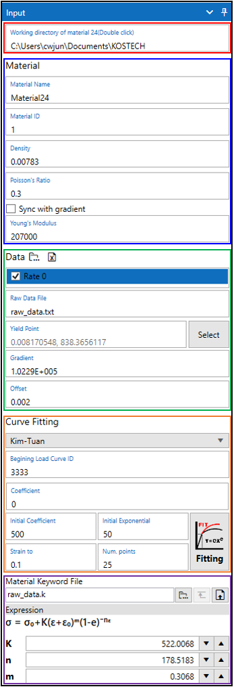

재료 물성 카드 생성
1. Steel 물성 카드 생성
LAMP에서 Steel 물성 카드 생성은 LS-Dyna의 *MAT_PIECEWISE_LINEAR_PLASTICITY(MAT_024) 카드를 생성하는 기능입니다. 해당 기능에서는 MAT_024 카드에 삽입되는 Load curve를 생성하고 LS-Dyna에서 사용가능한 키워드 파일 생성 및 출력을 위한 기능입니다. Load curve는 재료의 시편 인장 시험에서 얻은 raw data를 strain-stress plastic curve를 fitting으로 생성합니다.
1.1 입력 패널 UI
LAMP의 상단 아이콘 메뉴에서 아이콘을 클릭하면 입력 패널 UI가 우측에 표시됩니다.

1.2 Working directory
Working directory는 Curve Fitting으로 생성되는 데이터가 저장되는 경로를 지정합니다.
Selection of working directory
Working directory 선택은 입력란을 더블 클릭 하여 선택할 수 있습니다.
1.3 Material property
MAT_024 카드에 입력될 재료 물성 값을 입력합니다.
Sync with gradient
Sync with gradient를 체크하면 항복점 선택 시 정의되는 elastic line의 기울기 값으로 입력됩니다.
1.4 Setup raw data
시편 인장 시험 데이터를 불러오고 항복점을 선택합니다.
- Load raw data
시험 데이터를 가져오기 위해서 아이콘을 클릭하고 시험 데이터가 작성된 파일을 선택합니다.
지원되는 파일 형식은 다음과 같습니다.*.txt : 데이터의 각 열은 tab으로 구분되어야 합니다.
*.csv : 데이터의 각 열이 ,로 구분된 파일입니다.
*.xlsx : 일반적으로 엑셀(Excel)에서 사용되는 파일 형식입니다.

- Selection of data
가져올 strain-stress 데이터를 블록 선택한 후에 Data Type을 선택하고 필요에 따라
Name of Data를 변경합니다.
만약에 선택한 데이터가 strain rate를 가진다면Strain Rate를 입력합니다.
모든 입력을 마친 후에Apply to chart버튼을 클릭합니다.
Caution
가져오는 strain-stress 데이터의 각 열은 반드시 서로 인접해야 합니다.
Selection of Data Unit
선택한 데이터의 단위계를 선택합니다. 선택한 데이터의 단위는 g.mm.N.MPa 단위로 변환되어 표시됩니다.
LAMP에서 지원하는 전역 단위계 변환을 통해 실제 출력되는 데이터의 단위를 설정할 수 있습니다.
Selection of Data Type
Curve fitting은 Engineering strain-stress를 사용하여 수행되기 때문에 선택한 데이터는 Engineering strain-stress로 변환됩니다. 변환을 위해서 선택한 데이터가 어떤 형태의 데이터인지를 알아야 하기에 Data Type을 선택합니다.
True Strain Stress : 선택한 데이터가 True Strain Stress(진응력)일 경우 선택합니다.
Engineering Strain Stress : 선택한 데이터가 Engineering Strain Stress(공칭응력)일 경우 선택합니다.
Engineering Strain[%] Stress : 선택한 데이터가 Engineering Strain Stress이면서 Strain이 %단위일 경우 선택합니다.
Displacement vs. Force : 선택한 데이터가 Displacement-Force일 경우 선택합니다.
Attention
Displacement vs. Force일 경우 Engineering Strain Stress로 변환하기 위해 시편의 Guage Length, Specimen Width, Specimen thickness가 필요합니다. 활성화 되는 아래 입력란에 입력할 수 있습니다.
Tip
2개 이상의 시험 데이터를 가져와 일괄적으로 Curve fitting을 할 수 있습니다. 만약 각각의 데이터가 다른 strain rate를 가진다면 Strain Rate 항목을 입력하는 것을 권장드립니다.
- Selection of yield point
위 그림에서
Chart탭을 클릭하게 되면Apply to chart를 통해 가져온 데이터 curve를 확인할 수 있습니다. 소성영역에 해당하는 strain-stress curve의 fitting을 위해서 항복점을 정의해야 합니다. 항복점의 선택은Select버튼으로 할 수 있습니다.
Select버튼 클릭마우스를 Chart로 이동하면 선택 도구가 생성
커브에서 항복점을 선택
필요에 따라
Offset을 입력

1.5 Generation of plastic strain-stress curve
1.4에서 항목점을 결정하였다면 제공되는 경도 모델을 이용하여 Curve fitting을 통해 plastic strain-stress curve를 생성할 수 있습니다. LAMP에서 제공되는 경도 모델은 다음과 같습니다.
Min-Max Average
Voce
Swift
Ludwick
KIm-Tuan Hardening Model
Mixed Swift-Voce
사용하고자 하는 경도 모델을 선택하고 필요에 따라 다음의 입력 값들을 수정합니다.
Begining Load Curve ID : 생성된 curve가 *DEFINE_CURVE로 정의 될때의 LCID입니다. 만약 2개 이상의 raw 데이터를 일괄적으로 fitting한다면 1씩 증가하면서 각 curve의 ID로 할당됩니다.
Coefficient : Coefficient 값은 현재 사용되지 않습니다. 추후 삭제될 예정입니다.
Initial Coefficient : Curve fitting에서 각 경도 모델의 계수 및 지수 값을 결정하게 되는데 Inital Coefficient는 계수 값의 초기값입니다.
Initial Exponential : 경도 모델의 지수 값의 초기값입니다.
Strain to : Curve fitting으로 생성되는 curve의 strain의 범위를 입력합니다.
Num. points : Curve fitting으로 생성되는 curve의 point의 수를 입력합니다.
Tip
Curve fitting으로 생성된 curve가 잘못된 형태를 가질 경우가 있을 수 있습니다.
이럴 경우Initial Coefficient와 Initial Exponential을 조절하여 curve fitting을 다시 시도해 볼 수 있습니다.
Tip
Strain to를 0.1, Num. points를 25 입력시 0~0.1 strain 범위의 25개 점으로 curve가 생성됩니다.
1.6 Determination of result
Curve fitting이 성공적으로 수행되면 기본적으로 Working directory에 Raw Data File 입력란에 입력된 이름으로한 키워드 파일이 생성됩니다. 생성된 키워드 파일에는 *MAT_PIECEWISE_LINEAR_PLASTICITY 카드와 *DEFINE_CURVE가 포함되며 사용된 경도 모델의 수식과 fitting으로 결정된 변수들의 값을 확인할 수 있습니다. 만약 결정된 계수값들에 대해서 fitting된 결과가 만족스럽지 못하다면 상하 방향의 화살표 아이콘을 통해서 각 계수를 값을 변경하면서 curve를 직접 수정할 수 있습니다. 또한 생성된 키워드 파일의 저장 경로로의 이동 및 데이터베이스에 저장을 할 수 있으며 해당 내용은 아래 Tip 항목을 확인하시기 바랍니다.
Move the directory
아이콘으로 저장 경로로 이동 할 수 있습니다.
Move the directory
아이콘으로 생성된 데이터를 데이터베이스에 저장할 수 있습니다. 아이콘을 클릭하면 Insert User Data 창이 표시되며, Curve fitting으로 생성된 curve들의 목록이 표시되며 데이터베이스에 저장하고자 하는 curve를 체크합니다. Category를 선택합니다. Category는  아이콘으로 추가할 수 있습니다.
아이콘으로 추가할 수 있습니다. Material Name에 이름을 입력하고 Insert 버튼으로 데이터베이스에 데이터를 저장합니다.
Tip
데이터베이스에 저장되는 데이터는 모두 Category라는 항목 아래에 입력된 Material Name으로 저장됩니다.